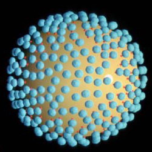
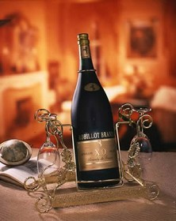
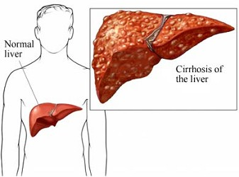
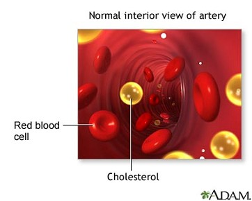
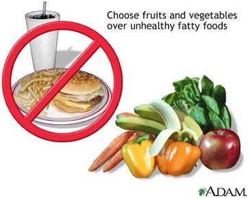
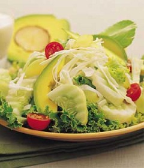
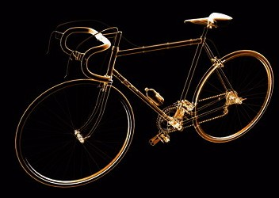
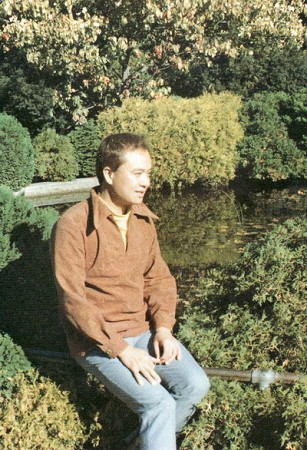
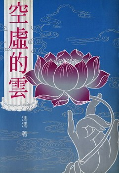
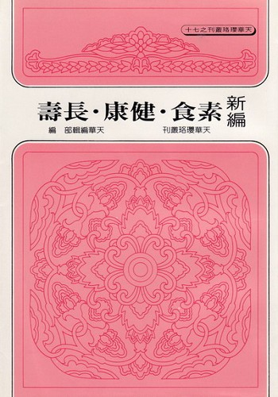

守戒与吃素
冯冯
迷失在未来 / 誊录
信佛吃素的好处说不尽，多少大德专家都说了，也还是说不尽的。因为信佛吃素的益处是绵绵不绝的，益上加益的。谁也说不完它无尽的好处，只有笃信佛法，实践佛法，实行吃素，才能够逐渐体会出益处来，行之越久，越能得到福祉益处。
信佛法的人，首先就须守持五戒，这些基本的启蒙戒行是──戒杀生、戒邪淫、戒酒、戒妄语、戒偷盗──都是很重要的，也都是利人利己的，是维系世界和平与保护万物生存和谐的最佳法则。如果全世界的人都能守这五戒，这世界就不会有永无宁日的战争与屠杀，社会也就不会有人犯罪了。可惜世人大多数都不能守持五戒，又不信佛法，只知贪婪、纵欲、拜金、勾心斗角、图谋别人、明抢暗偷、欺骗敲诈、饮酒食肉，自以为享受人生，却不知道是在自杀，更不知道因果报应，回归自身。
 看西方社会那些荒唐无耻的纵欲邪淫，自称“性解放”，享受“性自由”，于是性病流行，梅毒遍传，殃及下一代。以为盘尼西林是万能仙丹，怎料病菌却已产生了抗体，再也不怕盘尼西林了。如今又出现了更可怕的病菌，这是一种细微至极的过滤型栗状的毒菌，专吃人体内T型白血球，造成了“后天获得的丧失免疫力症”，简称为“AIDS”，译名通用者为“艾滋病”，其实译为“爱死症”更为恰当；它已成为本世纪最可怕的性病瘟疫，无药可医，患者必全身溃烂而死。这都是邪淫的现世恶报。佛教为什么要教人戒邪淫？就是因为佛陀老早就洞悉邪淫会带给人种种致命的病毒。另外，就是道德问题，那更不必多述了。
酒能乱性。在台湾，一场大拜拜下来，街上到处是醉汉，不是酒醉殴人，就是被人殴；还有烂醉如泥，倒毙路旁，车祸死亡……。在西方社会，酒醉闹事的例子更多，纽约、三藩市、温哥华、伦敦、洛杉矶、东京……醉汉满街，打架滋事，常出命案。不能自拔的年老醉汉，倒毙街头，比什么都贱，再软心肠的路人，也不会为之流一滴眼泪。多少人因喝酒太多而百病丛生。法国以香槟与白兰地驰名全球，一瓶名酒，价值千金，可知法国人肝癌的死亡率占全世界最高！苏格兰威士忌谁不称美？欧美人士把威士忌当水喝，怪不得那么多人罹患肝癌、心脏病与酒精中毒而死！由此可知佛陀的确是慈悲的，佛陀教人戒酒，是有深意的。
 偷盗抢劫，是古今最普遍的罪行之一，它造成社会的混乱，这是损害别人的一种不道德行为，也是促成世界纷乱的原因之一。其形成的主因就是──贪 梦。如果世上没有贪欲，就不会有偷盗抢劫，也就不会有战争。所以佛陀教人除去贪、嗔、痴三毒，三毒不染自然能戒偷盗，这真是远瞻的教训。
妄语与谎言也是不道德的行为。妄语的动机出于欺骗，而欺骗也就是世界烦恼纷乱的起因之一。佛陀叫人戒除妄语，当然是以动机的善恶作为衡量的准绳。如小孩子不乖，做父母的说：“你再不睡觉，猫咪就来咬你了！”这分明是哄骗小孩的话，但绝不能算是“妄语”，佛教所称妄语，是指的有恶意欺骗的谎言。
 除上所言，更加应该重视的，乃是“戒杀生”！佛陀本大慈大悲之心，视众生平等，因此教世人戒杀生！不但要戒杀害同类，还须戒杀异类；不但不可杀人，也不可屠杀畜生或任何动物，就是对于“无情生”也须尽力加以爱护，一草一木都不妄加伤害。戒杀生的内涵是平等无我的大慈大悲，是同情心、是悲悯、是不忍、是护生；我们不忍为了口腹美味，而去杀死猪牛鸡鸭而食其肉，我们不忍见到畜牲们在刀斧之下，挣扎哀鸣无助的悲惨状况。设使我们身为鸡鸭牛豕，被人割喉、斩头，在血淋淋中挣扎，那是什么样的滋味呢？是以佛陀教人守五戒，又以戒杀为最先，不单是为了慈悲而戒杀，也应该想到因果报应的可怕。“今日你吃他，来日他吃你。”这句名言，是不可轻视的。世上没有一件事可逃得出因果循环，所谓“善恶到头皆有报，只争来早与来迟。”今世所吃的鸡鸭猪羊牛，来生或再来生仍要还他们这笔血债。就是在今生，也要受到恶果之报的──那就是：由动物油脂及胆固醇引起的血管粥状硬化、心脏病、高血压、脑充血、中风、胆结石、癌症等等致命病症。美国人的心脏病罹患率为全球之亚军，因为他们吃肉多！但是纽西兰人更多心脏病高血压死者，因为他们吃羊肉太多！加拿大人亦吃太多牛肉，因此情形亦复相似。日本人吃生鱼太多，因此患肠胃癌而死的最多！爱斯基摩人吃生肉，他们平均寿命只有四十多岁！
佛陀教人吃素，一方面是基于大慈大悲戒杀生的胸怀，同时也是为了健康着想。说吃素，不能不先了解佛陀为何教世人吃素。吃素却又不戒杀生，便是盲目吃素──比方说：太太自己吃素，全家依然吃荤；做拜拜时，杀猪杀牛，杀鸡鸭牲口，全家大吃大喝。大家都把尸毒吃进肚子内，吃得进，排不出那些肉类的饱和脂肪、胆固醇、尸毒、高度尿素，和那些“打针鸡”“打荷尔蒙牛”“打肥猪素”之类催促牲口快速长大的化学药品（其中很多是含有致癌物质的）；还有那些腌火腿、烤鸭、咸鱼、香肠……所含的防腐剂毒素真是不可胜数。如此经常吃鱼吃肉，还加上喝酒，这简直是慢性自杀之尤了！更别说杀生积了恶业将来自受因果！
人体的器官功能，无法化解这些吃荤喝酒的毒素，只有不断地吸收。于是，血管内积聚了太多游离的脂质与胆固醇，造成血管硬化与不通。冠心病、中风、瘫痪、肾脏败坏、肝脏硬化、人的外貌越来越老化，衰老加速，死亡也提早。这些都已由现代最新医学予以证明了。西方国家的医学界，现在有很多在提倡减少肉食，有些人更进一步提倡素食。 吃荤有那么多的害处，那么为什么有些人始终改不了呢？这可能是教养与习惯问题。最近美国有一部野生动物纪录片，其中一段播映出一个研究者，饲养了一支雌性的老鹰。他在老鹰下蛋以后，趁它飞出去的空档，就把它的四个蛋偷起，另用四个鹅蛋放回巢中。那笨瓜老鹰一些也分辨不出来，照样孵化了这四个蛋，孵出四只胖胖可爱的小鹅来了。老鹰这一下可愣住了，怎么儿子变成了小鹅呢？幸亏老鹰没有丈夫，要不然，可就得闹离婚了，老鹰先生可以控告她不贞呀！这老鹰太太也真奇怪，它没把小鹅吃掉，相反地，它把四只小鹅都当作亲生儿子，它如常的喂养小鹅。问题是，小鹅是天生吃素的禽类，不吃肉的，老鹰妈妈天天飞出去，衔了兔子老鼠什么的回家，啄撕了血淋淋的肉，慈爱地喂饲小鹅。小鹅们起先不吃，后来饿得没法子，也只好吃肉了。可怜小鹅的嘴甲，并不适合吃肉的，但它们也得学老鹰妈妈的样子，去啄吃肉类。
吃素的风气，渐渐在西方社会传开来了。他们称之为“保健素食运动”，虽然不沾什么宗教色彩，也多少趋向于慈悲戒杀，他们信佛与否，又有什么关系呢？他们这些少数的西方人，能实行戒杀，能知慈悲，能吃素食，事实上就已是行佛法的基本戒律之一了。能不愧煞我们当中许多不肯吃素的人？我们当中有些学院派的佛学研究大家，写佛学和哲学理论，写得精辟高深，但是仍然不吃素，不守五戒。这种人深明佛理，但知而不行，真是太可惜了！枉费了他们高深的佛学修养，反而比不上西方的一般保健素食主义的实行者哪！
到几个月以后，小鹅都长大了，本能地跑到水潭去游水，老鹰妈妈这一看，可真愣住了，把头扭旋了三百六十度，倒转头来直瞪儿子，“儿呀！怎么你们是会游泳的呢？”
这一段真实的实验记录，证明了吃肉是从父母或祖先一路的错误传统传下来的。本来吃素的小鹅，竟然变成了吃肉；人也是一样，人本来是吃素的，不幸被错误的教育成吃肉；人本来是不杀生的，但是被错误的传统观念教导成为杀生。传统的观念以为吃鸡最“补”！吃青蛙也补，吃猴脑就更补；梁山伯的“好汉”们不是爱活吃人心下酒进补吗？这都是错误的进补观念！广东人爱吃蛇，视蛇为补的珍品，每年不知有多少老广，吃了蛇肉蛇胆中毒而死，他们到死还不自知啊！
我这一个老广可不吃蛇！甚至不吃肉，不吃荤，我的祖先是燕国人（现在的北京）他们不是吃素的，我的父亲每餐无肉不饱，可是我生来就是怕吃荤，所谓“胎里素”（以前我曾多次写过“，从小就只肯吃青菜豆腐，怎么哄、怎么吓，也不肯吃荤，至今仍然如此，说我什么前生夙慧，那都不敢当。夙慧我是没有的，只有出生就谨记吃素与戒杀生等戒律而已。我的父亲很不谅解我，也是爱子心切，他总是强迫我吃荤，彼此分离之后，他老人家在香港患了中风逝世了，原因就是生平吃肉进补太多。我曾常常写信劝谏他，他都不听，照吃他一向爱吃的猪蹄膀。虽然从小离开他，但是父子天性仍在啊！每一念及，都难免哽咽叹息！
 我的母亲，在年轻时，因为出身农村贫家，当时难得一饱的贫穷村人，无不以吃肉吃鸡为最大的享受，我母也不例外。我幼时常见到母亲买鸡来杀吃进补，我不知哭了多少回，我是怎么也不肯吃一口的，每次看到佣人杀鸡，我总要和她争吵一番，大哭大闹不许杀，看到杀青蛙，也不许杀，我总是哭着被抱走，恐怕这也是促成父母不和的原因之一。我很不听话，不肯吃荤，每次都闹得父母因我而争吵。我幼时，母亲很多病，有几次还病重进了医院，也不知是什么病。实际上，她吃了鸡肉鸡油，引起了高度饱和脂肪中毒，全身肿泡奇痒，连嘴都肿起了“风疹”，现代医学称为“过敏症”。但在几十年前，是还不知道的。年幼的我，只有哭，劝不了她。后来，我渐渐长大，比较会劝母亲别再吃鸡吃肉。在加拿大的二十多年里，我母亲逐渐养成吃全素的习惯，目前已是吃全素多年了。加拿大的肉类便宜，鸡更便宜，又方便，不必自己去杀，许多大陆来的移民，在大陆饿了多年，一到加就拼命吃鸡吃肉，餐餐吃炸鸡。可是我母亲已做到了半点鸡与肉都不吃。刚来的几年，她还当常常须医生，现在吃素已久，她的身体比年轻时好得多了，也不再出风疹了，不须常看医生了，来舍下见过我母亲的客人，都惊讶我母亲怎么脸色那么红润且健步如飞，毫无老态，看来比她的实际年龄要年轻了二十年。她接电话时，陌生人以为她是小女孩──因为她的声音像十岁左右的小女孩，她血压正常，一切都很好，显然是吃了全素多年（二十多年）的功效，现在是连医生（好几位），都上门来问吃素的方法了。
至于我自己，实在乏善可陈，从小吃素倒是很少生病，就是偶然外出传染到感冒，也好得比一般人快；别人两周，我是两天就好了。我的形貌，见过我的人都说：“你怎么还那么年轻？”很多人还当我是少年看待，我脸上至今没有一条皱纹，全身肌肉仍然结实──可能是由于我每天劳动，走路很多、剪草、锄土、砍柴、锯木、修树、打扫……，忙个不停。二十年前在台北见过我的朋友，最近见到我，惊讶地说：“怎么你还是二十多岁的样子？一点也不像是四十多，你怎么修的？”
我的同学与友人，名成利就的很多，但是他们人人都衰老了，又多病，又多烦恼，和他们一比，我变成了晚辈小孩子了。
 别说我懂得修什么？只不过是吃长素，每天做苦工，每天走路，如此而已。
前几天（一九八五年十一月十五日），我领到了两三百元的各地合计的稿费，忽然顽心大发，跑去买一辆脚踏车，这是我梦寐以求多年的一种“跑山单车”，平时卖四百多元加币的，这一次是台湾出产的，只售一百七十元，我就忙着去买，作为运动之用。笑话就闹出了，那家公司的经理看见我一副猴急渴望的样子，拿出现钞立即付钱，他就特别吩咐收钱小姐：“不要加收他的钱了！”
在加拿大温哥华买东西，须附加百分之七的零售税。即是，单车售价一百七十元，付钱时须再付十一元九角的税。每种货品，除食物之外，都须付税的，单车亦然。我付了钱，自己搬了八十磅重的原装单车一箱，离去前，和经理说一声“拜拜！”我心想，他大概是特别照顾我这位“老”顾客了，我就谢谢他。
 怎知这位洋人说：“我的孩子，你不用谢我，规定本来要扣税，但是十五岁以下的顾客不必付零售税！”
他有无搞错呀？怎么把我看成十四岁！是有这么一条法律──十五岁以下不必付税。但是，我怎么会看来像十五岁以下呢？我真疑心他的眼睛有毛病，他又不是近视的，他和我面对面，相距不到三尺，我也没有故扮少年，而且，我的头发多少也有些灰白了，实在我比他还年纪大，他才不过三十多岁的样子。我料不到他会那么看走了眼，五尺六寸的身材，也算是中等，怎么会变成十四岁呢？洋人孩子十四岁是很多比我高大，可是，我怎么想也想不通？！但是能省下十多块钱，又不是我存心欺骗的，我只好笑着走了。回到家里，和母亲，和来访友人，大家一说，无不大笑！“冯冯呀！你是越老越年轻了。”邻家小孩只肯喊我为“哥哥”，不肯喊叔叔，也还比不上这一次好笑。
我被人视为二十多岁，是常有的事，被洋人视为十四五岁，则是头一次！也不是“其词若有憾焉，其实乃深喜之！”谁被人看年轻了不欢喜！我吃素，做劳动苦工，经常行走，这就是我的修“行”。修“行”路也！多“行”也！我是不很耐烦打坐的，写稿一天坐数小时就坐怕了。我除此之外，也不懂得啥是修行？但我常记住自勉：学佛法，须先发慈悲心，不杀生，守戒，吃素，常力行劳动，多“行”，勿求境界，这就是了。
去年，拙着“空虚的云”蒙天华公司出版。天华公司有函来，说要在书的封底刊印我的近照。我向来不喜欢公开我的照片，但也顺意地寄了一张照片去，并且表示我不喜以色相示人，天华公司的一位先生来信说：“你怎么把二十年前的照片寄来呢？照片看来还是二十岁的样子，不够老成，不能配合这本作品的成熟笔调。”我回信说，那么就别印照片了。本来，我就最反对印出作者照片。我认为作者与读者之间，神交就够了，何必登照片，那么俗气！后来就没登了。那张照片自然也不是二十年前的，只是两三年前的。今年八月，我拍了几张在园子的生活照，也还是二十岁的样子，我一些也不以为憾，我想吃长素的人都比他们的实际年龄年轻二三十岁，我和他们这些大德比，还差了一大截呢！
 盼望将来，当我到了七八九十岁之时，也会看起来像三四十岁！我也盼望人人都吃素，人人都发慈悲心，勿杀生，勿吃荤，人人都永保健康，且能发广大慈悲心，善待人类和一切众生异类。

收录于《新编素食。健康。长寿》天华编辑部编
原载《天华》第83期：1986年4月1日
原载《天华》第84期：1986年5月1日